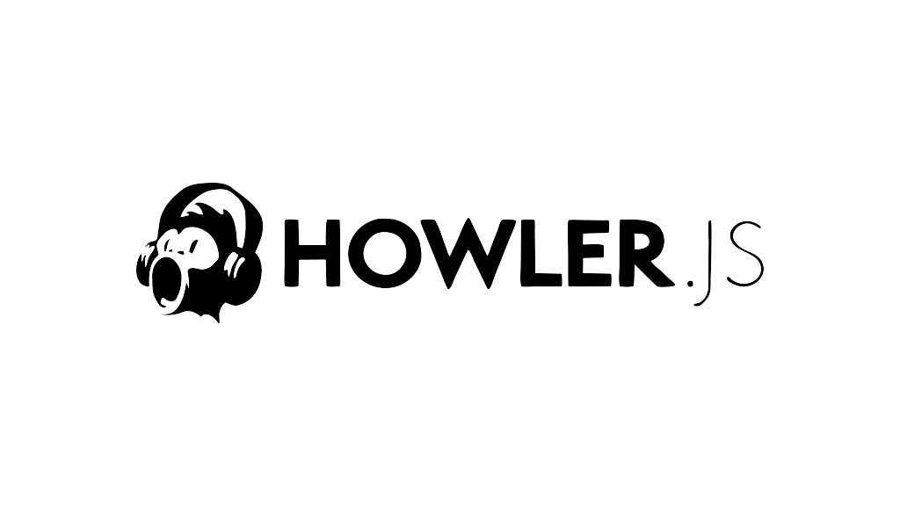
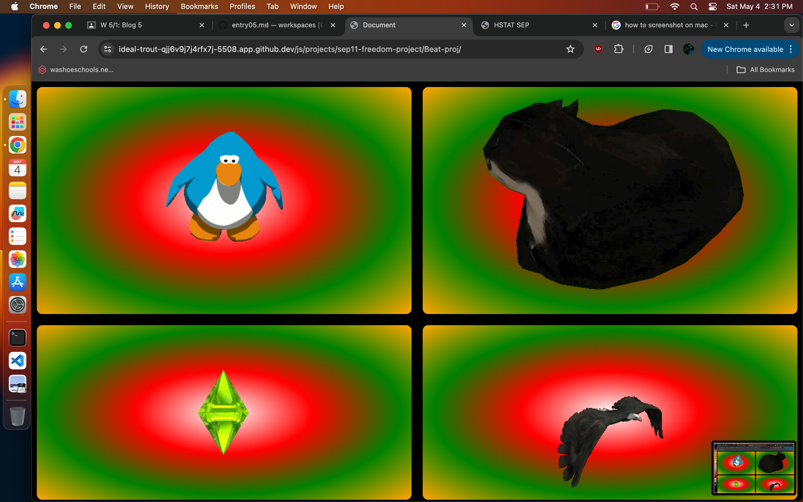

sep11-freedom project!
Beat-project/sound-board
Context: sep11-freedom-project, tasked with choosing one or more tools to create a project due at the end of the year using JavaScript
Content: over the course of these blogs, I show a progression of my javascript abilties and milestones in the learning of my tool
implications:
Social:
- individual: people will be able to connect with the project as they can actually interact with through clicking a mouse, and hearing/creating sounds/music.
- relationships: people have a stronge bond to music, interacting with music will be able to create new bonds with people that use my project, looking deeper into how music shapes us.
- culture: music is a culture, and it's genre's have cultures aswell, and those genres have sub-cultures as well. I hope my project adds to the culture of music.
Economic:
- jobs:a lot of people make a living of music, and I really like music so it would be cool if I could build off of this music project, branching off into making actual music.
- finance:
finding beatkits/soundboards is difficult on the internet because most of the time, music and sound libraries are locked behind paywalls and subscriptions, and my project is free to use for those who want to.
Freedom-project
slides

